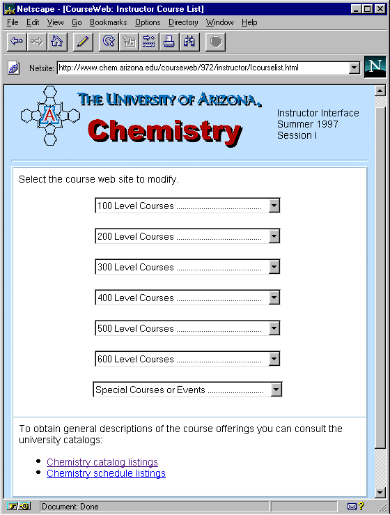
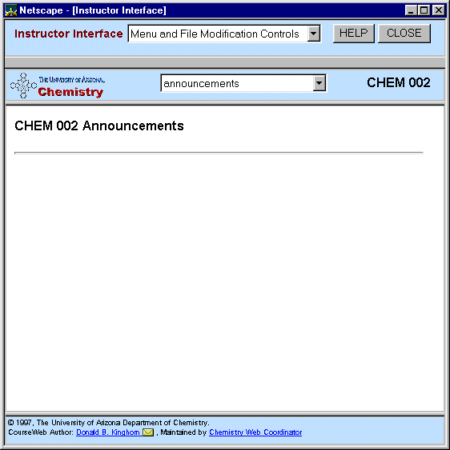
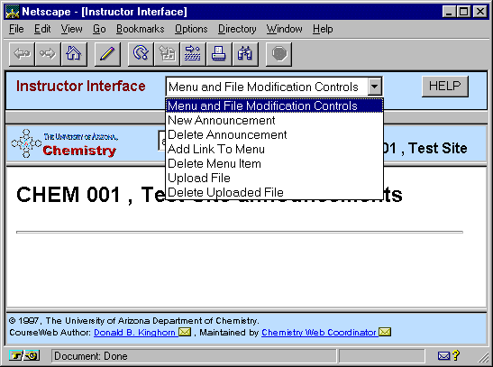
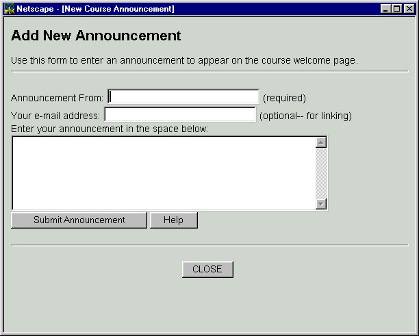
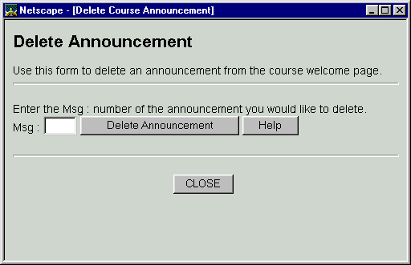
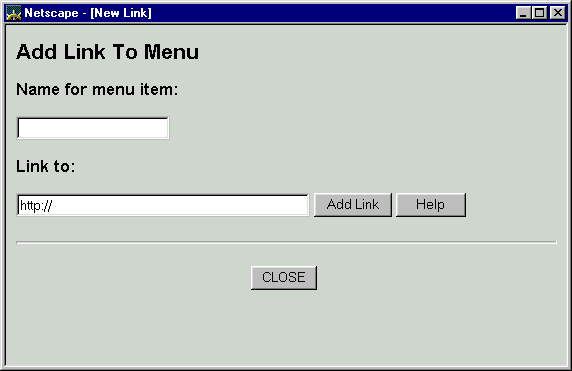
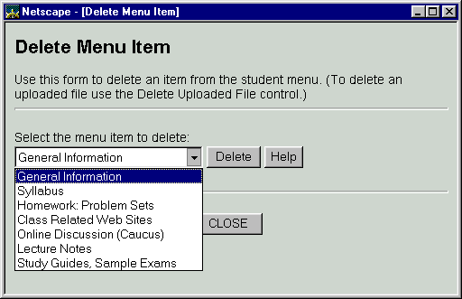
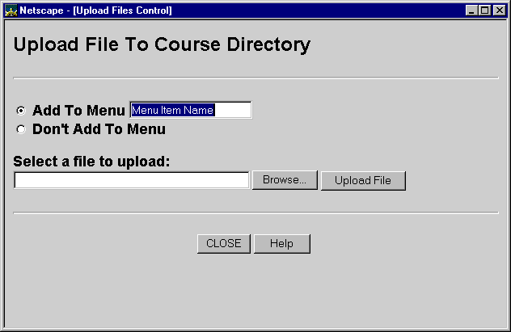
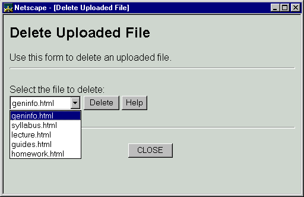

CourseWeb - The Instructor Interface
NOTE: Each course is initialized with a default set of menu items on the student interface. Instructors can use these menu items by uploading the appropriately named files to the server (view the default pages, they contain the file naming information). Or the menu items can be removed and new menu items and web pages can be added using the Instructor Interface as described below.
The instructor chooses the course website they would like to modify from a set of drop-down menus. After choosing the course the main CourseWeb Instructor Interface webpage appears (see below)

The Instructor Interface has four sections. The small top section is the heart of the Instructor Interface. The three lower sections are the Student Interface.
The top section contains a menu with the Instructor Functions. These functions allow the course instructor to build and modify the menu list of the Student Interface, and upload web pages to create and modify the content of the course website.

Instructor Interface Functions - Menu and File Modification Controls
There are seven Functions available in the Instructor Interface. Each of these functions are explained below.

New Announcement - Add to the announcements page
The new announcement function allows the instructor to quickly add comments to the Announcements page of the course website. The Announcements page is the initial page shown to the user when they enter the site. Announcements are added at the "top" of the page and all privious announcements can be reviewed by scrolling down the page.
As shown below the function requires a name in the "From" box. If an email address is added in the e-mail box it will be converted into a functional "mailto" which will allow netscape users to send e-mail easily. The announcement box can contain any textual information. If "http://" addresses are included in the announcement text they will be added as active internet hyperlinks.

Delete Announcement - Delete from the announcements page
The Delete Announcement function allows the Instructor to remove old announcements. When announcements are removed the remaining announcements are not renumbered.

Add Link to Menu - Create New Menu Item, link to existing web page
The Add Link to Menu function allows the Instructor to create a new menu item on the Student Interface for the course and assign an "http://" address (URL) to the new menu item. This is used to give students quick access to an existing site on the web.

Delete Menu Item - Remove Menu Item from Student Interface
The Delete Menu Item function allows the instructor to remove items from the Student Interface. The item to be removed is chosen from a drop-down menu of the items in the Student Interface as shown below.

Upload File - Upload files to server, Update files on server
The Upload File function allows the instructor to upload web page content (html or graphics files) to the server. The pages can be added as new menu items or added to the server without creating a new menu item on the Student Interface.
This function can be used to "update" files which already exist on the server. Uploaded files with the same name as files which exist on the server will over-write the existing file. Any links to the existing file will link the the latest uploaded copy.
This function can also be used to upload pages or graphics which are referred to ("linked") by other web pages. This feature requires the instructor to understand and use hyperlink features of html documents (This topic will not be addressed in this document. For assistance or pointers to html classes and online tutorials see the Chemistry Department Web Developers Page.)

Delete Uploaded File - Remove file from server
The Delete Uploaded File function deletes files from the server. Only files which have been uploaded using the Upload File function can be deleted with this function.
